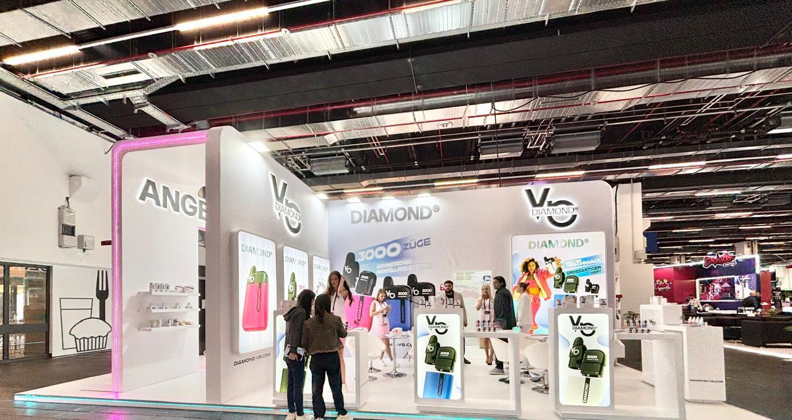
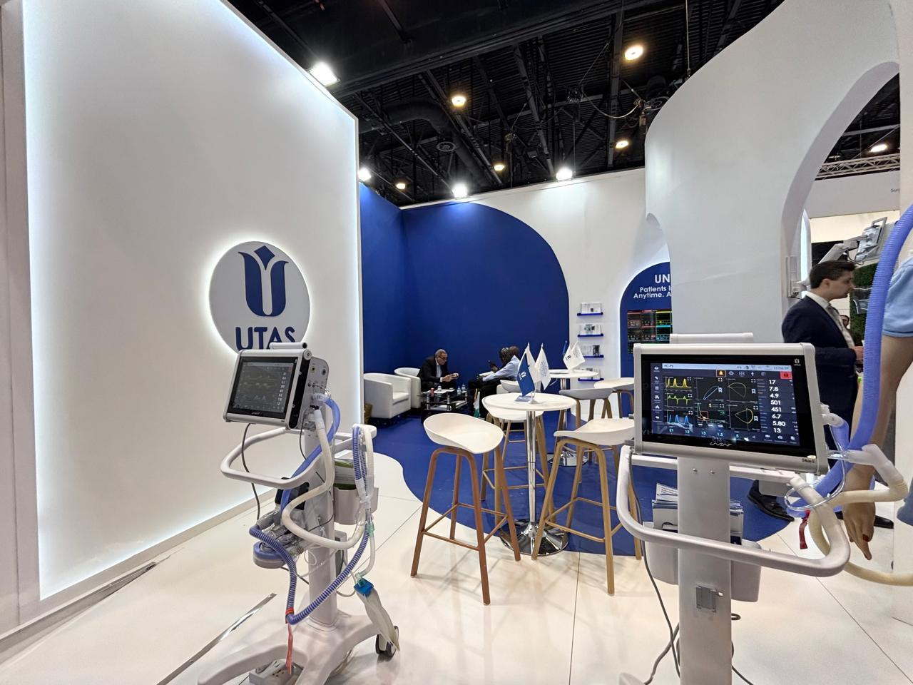
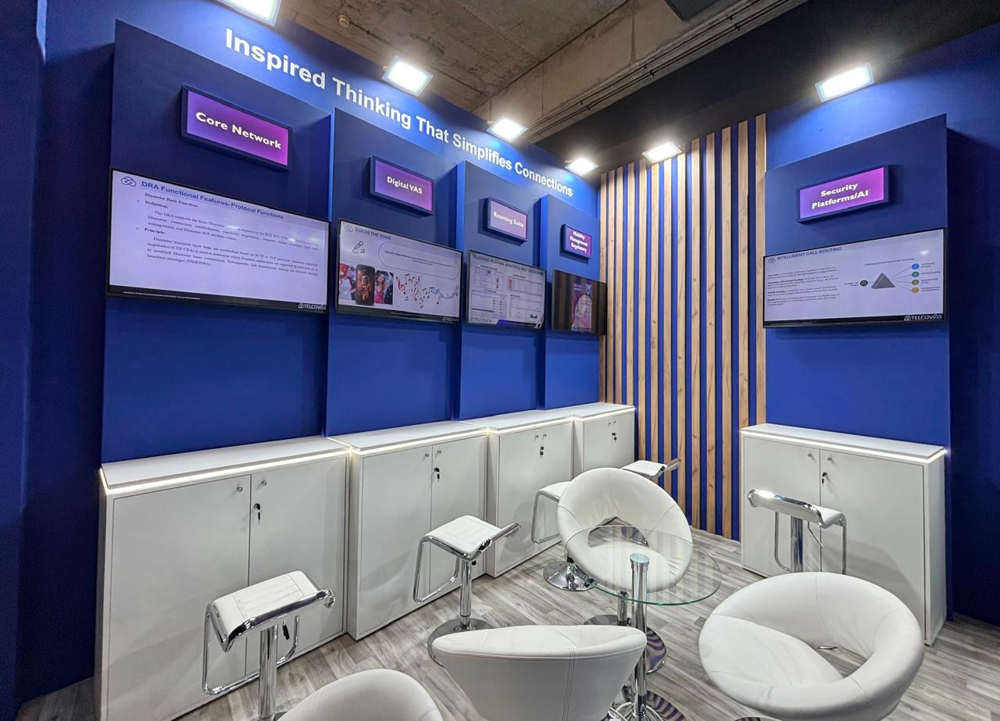
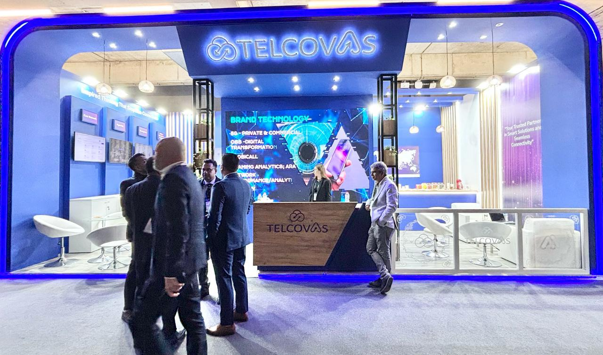
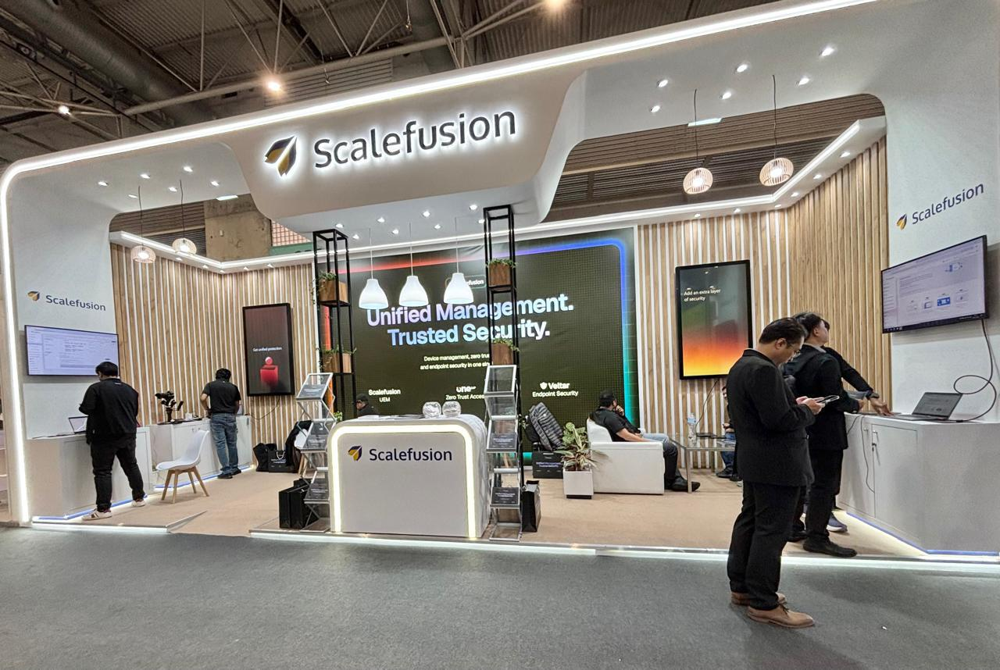

Precision Exhibition Booth Fabrication at Messe Berlin & CityCube
Get a Free QuoteGerman Engineering Excellence in Exhibition Design
As a leading exhibition stand design company in Berlin, we deliver precision-engineered booth solutions at Messe Berlin, CityCube Berlin, and other premier German venues. Our designs combine German engineering excellence with creative innovation.
With comprehensive understanding of strict German TÜV safety standards and exhibition regulations, we ensure flawless execution. Our multilingual team delivers exhibition stands that reflect Berlin's position as Europe's innovation capital.

German Precision Meets Creative Exhibition Design

Cutting-edge technology exhibition stand at IFA, Europe's largest consumer electronics show at Messe Berlin. Featured interactive product demonstrations, VR experiences, German-engineered display systems, and premium meeting lounges. The minimalist design with precision manufacturing reflected German quality standards. Successfully showcased 50+ new products to 10,000+ industry professionals generating €15M+ in pre-orders during the five-day event.

Contemporary fashion exhibition stand at Mercedes-Benz Fashion Week Berlin. The design featured industrial-chic aesthetic with exposed elements, professional runway area, backstage zones for models, and exclusive buyer lounge. Sustainable materials including reclaimed wood and recyclable displays reflected Berlin's eco-conscious fashion scene. Successfully launched three new collections to European fashion buyers generating €500K+ in wholesale orders.

Industrial exhibition stand at world's leading railway exhibition showcasing German engineering innovation. Featured full-scale train component displays, interactive technical specifications, CAD design stations, and executive meeting rooms. The robust design with industrial finishes reflected manufacturing excellence. Facilitated 200+ B2B meetings with international railway operators resulting in €50M+ potential contracts for German rail industry technology.

Innovative startup exhibition booth at Europe's leading interdisciplinary technology festival. The design combined Berlin's startup culture with professional exhibition standards featuring pitch stage, networking zones, product demo stations, and cafe lounge. Creative use of neon lighting and modular furniture created Instagram-worthy spaces. Successfully connected with 50+ VCs, generated 5,000+ app downloads, and secured €2M seed funding round for our tech startup client.
Partner with Berlin's trusted exhibition stand design company. We deliver exceptional booth fabrication for Messe Berlin, CityCube, and all major German venues. Get your personalized quote today.
Contact Us Now